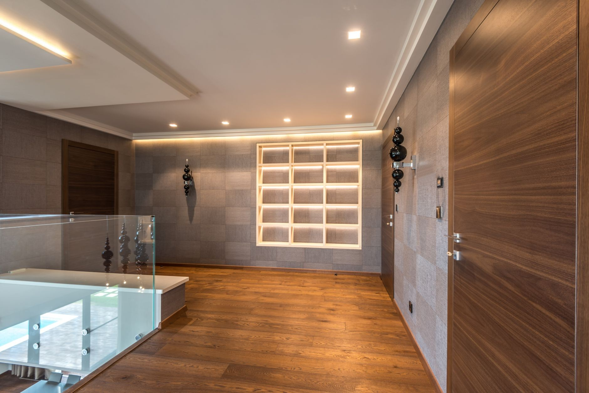
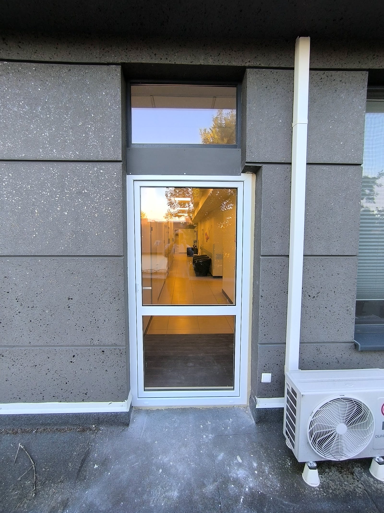
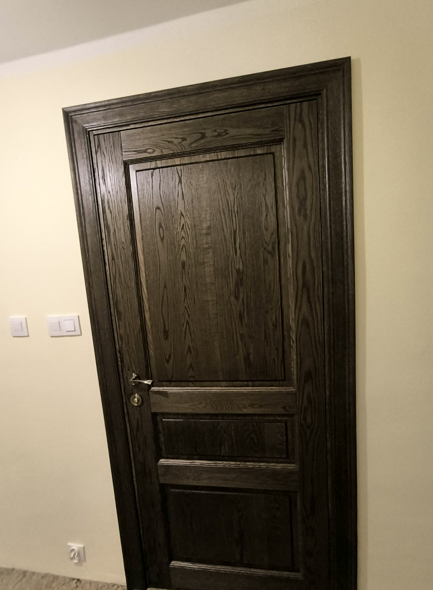
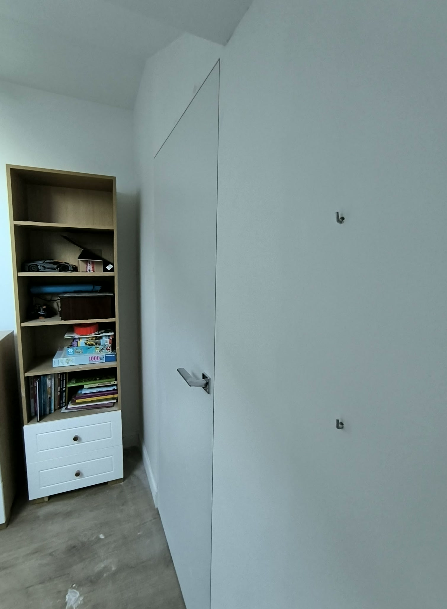
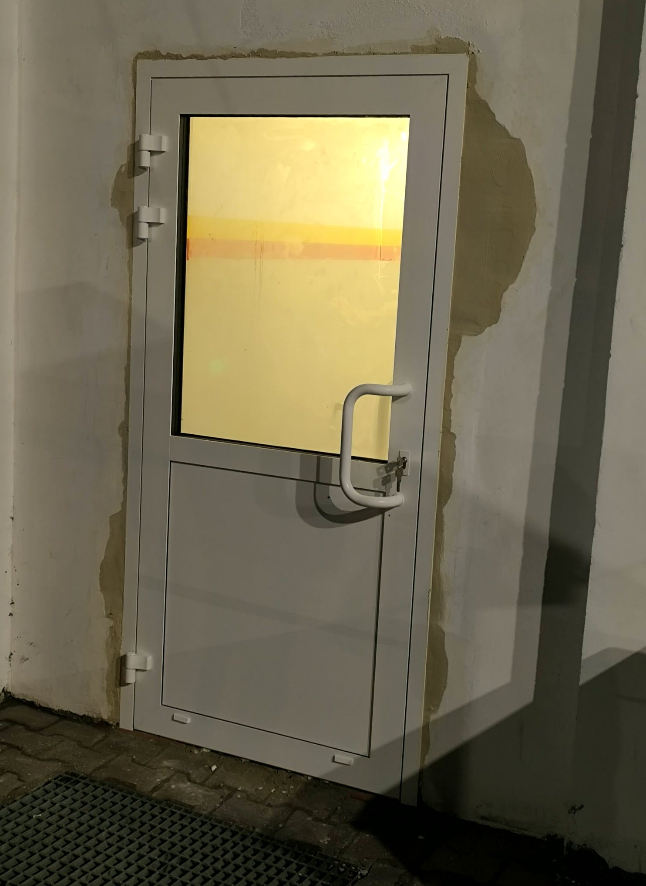
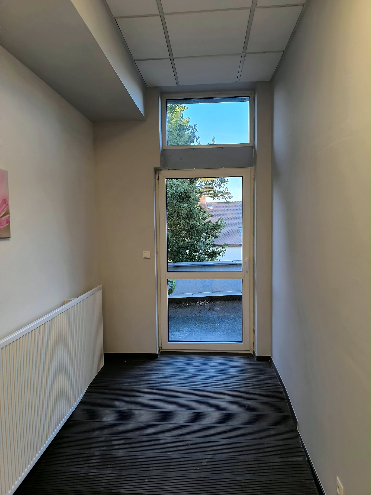
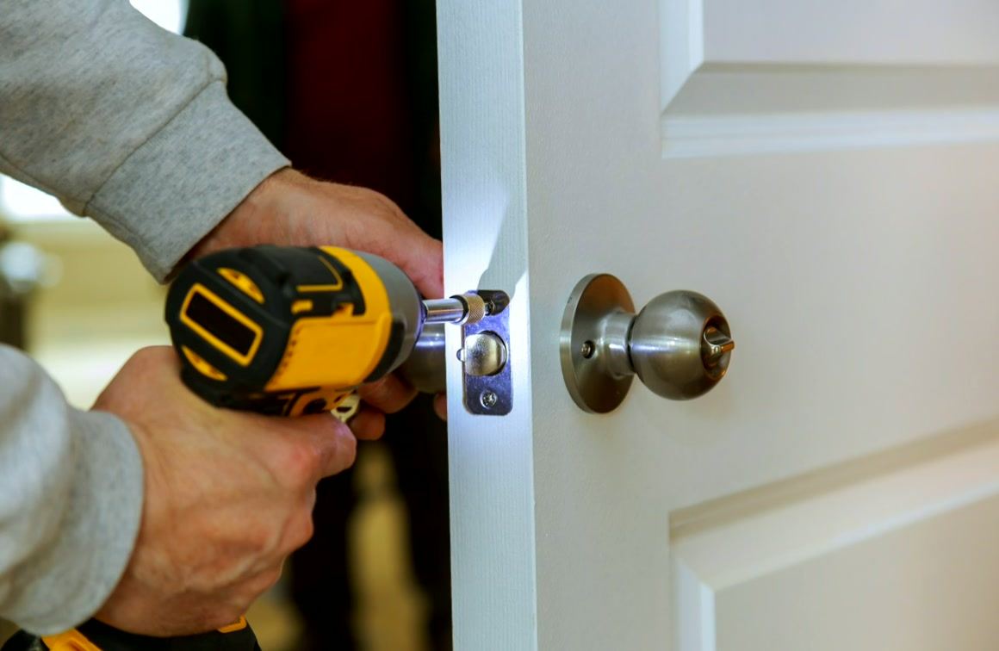

Zakres prac
Zajmujemy się drzwiami i oknami od pomiaru po wykończenie. Możemy dobrać i dostarczyć stolarkę albo zamontować tę, którą już kupiłeś. Przy okazji montażu robimy drobne prace wokół otworu: poszerzenie, tynk, obróbkę.

Drzwi zewnętrzne
Wymiana drzwi wejściowych do domu i montaż w nowym budynku. Przygotowujemy podłoże i próg, osadzamy skrzydło z ościeżnicą i uszczelniamy połączenie z murem.

Drzwi do mieszkania
Wymiana drzwi wejściowych w bloku i kamienicy - także w Warszawie. Demontaż starych, montaż nowych i obróbka otworu od strony klatki i mieszkania.

Drzwi wewnętrzne i bezprzylgowe
Drzwi pokojowe przylgowe i bezprzylgowe, z ościeżnicą regulowaną. Skręcamy i ustawiamy ościeżnicę w pionie, żeby skrzydło domykało się bez szczeliny.

Drzwi techniczne
Drzwi do kotłowni, garażu, piwnicy i pomieszczeń gospodarczych. Dowozimy i montujemy także na budowie w stanie surowym.

Wymiana okien
Wymiana okien w domu i łazience: demontaż, osadzenie nowego okna, pianka, a potem obróbka wnęki po montażu.

Regulacje i przeróbki
Zmiana kierunku otwierania drzwi, regulacja skrzydła i okuć, drobne prace remontowe wokół otworu po wymianie stolarki.
Która z usług Cię interesuje?
Napisz, co chcesz zrobić - odpowiemy z propozycją i wyceną.